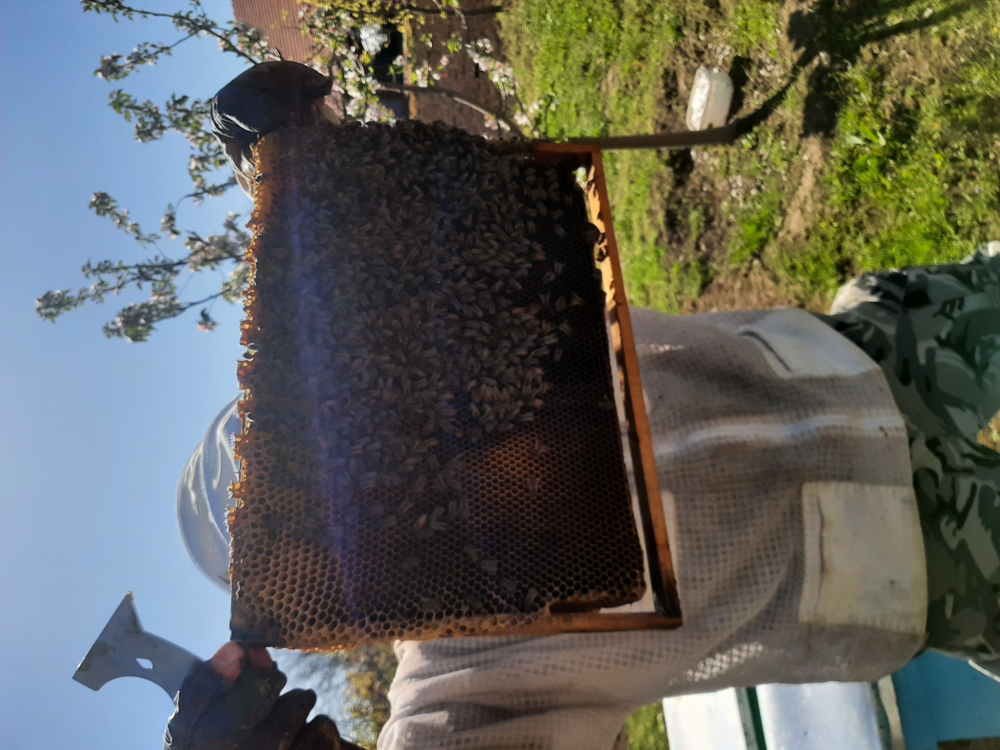

За нас, семейство Бельовски, пчеларството никога не е било просто работа, бизнес или занаят. То е призвание. То е споделена любов, която се предава с погледа, с грижата и с умората в края на деня, която носи сладост. Всеки път, когато застанем пред кошера, ние усещаме онази чиста връзка с природата, която съвременният свят често забравя. Слушаме тихото, успокояващо жужене и знаем, че нашата мисия е свята: да пазим тези малки труженици и да донесем техния чист дар до вас. Във всеки един буркан, който пълним с ръцете си, ние не просто затваряме кехлибарен еликсир. Затваряме слънчевите лъчи на лятото, уханието на чистата гора, песента на вятъра в Крушовица и парченце от нашите сърца. Нашият мед е жив, суров и истински. Ние не променяме нищо от това, което пчелите са сътворили, защото вярваме, че природата няма нужда от корекции – тя е съвършена в своята простота.
Нашият пчелин е разположен в екологично чистия и плодороден регион на село Крушовица. Далеч от шума на големите градове, от индустриалното замърсяване и натоварените магистрали, нашите пчели събират нектар от богата палитра от диворастящи билки, слънчогледови масиви и чиста горска растителност. Специфичният микроклимат и чистият въздух на региона са тайната съставка, която придава на нашия мед неповторим вкус, плътен аромат и доказани лечебни свойства.
